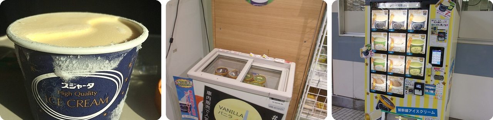

🌍 톱 10 기차와 비행기에서 파는 황당한 음식
2026년 11월 15일
1. 🇯🇵 일본 신칸센 아이스크림은 너무 딱딱해서 먹을 수가 없어요

일본 신칸센(고속열차)에서 파는 바닐라 아이스크림은 딱딱하기로 너무 유명해서, 인터넷에서 '신칸센 너무 딱딱한 아이스크림'이라는 별명이 붙었어요. 2021년부터는 이 농담 같은 이름이 공식 판매 이름이 됐어요.이유는 이래요. 열차 칸에는 냉동고가 없어서, 판매 카트가 드라이아이스로 아이스크림을 차갑게 유지해요. 게다가 우유 지방이 많고 공기는 거의 들어 있지 않아요. 차갑고 빽빽하니까 → 플라스틱 숟가락이 안 들어가고, 가끔은 뚜껑조차 안 열려요.
만든 회사는 10분 기다렸다 먹으라고 해요. 어떤 사람들은 부드럽게 하려고 뜨거운 커피를 부어 봤는데, 오히려 커피가 얼어 버렸대요.
10분짜리 타이머가 붙어 나오는 간식인 셈이에요.
2. 🇯🇵 홋카이도 어느 기차역의 명물 도시락은 오징어 속에 밥을 채운 거예요
 1941년, 제2차 세계대전 중 일본은 쌀이 모자랐어요. 홋카이도 모리역의 도시락 가게는 오징어가 아주 많이 잡힌다는 걸 알고, 통오징어 속에 밥을 조금만 채워서 쌀을 아껴 쓰기로 했어요.
1941년, 제2차 세계대전 중 일본은 쌀이 모자랐어요. 홋카이도 모리역의 도시락 가게는 오징어가 아주 많이 잡힌다는 걸 알고, 통오징어 속에 밥을 조금만 채워서 쌀을 아껴 쓰기로 했어요.
오징어 다리를 떼고 속을 깨끗이 비운 다음, 밥을 채워서 다시(일본식 육수)에 뭉근하게 졸여요. 이쑤시개로 막아서 밥이 빠져나오지 않게 해요.
이름은 이카메시, '오징어 밥'이에요. 1966년 도쿄의 한 백화점에서 열린 큰 에키벤(기차역 도시락) 박람회에 나갔는데, 두 번째 해에 판매 1위가 됐어요. 지금은 사람들이 일부러 찾아 먹는 홋카이도 음식이에요.
한마디로, 오징어가 곧 도시락통이에요.
3. 🇹🇼 대만 철도 돼지갈비 도시락은 32년 만에 돌아와서 예상의 90배나 팔렸어요
 대만 철도는 1년에 도시락을 약 500만 개 팔아요. 대표 메뉴는 밥 위에 돼지갈비를 얹고 조린 달걀, 말린 두부, 말린 무를 곁들인 거예요. 점심과 저녁 시간에 승무원이 통로를 따라 다니며 팔아요.
대만 철도는 1년에 도시락을 약 500만 개 팔아요. 대표 메뉴는 밥 위에 돼지갈비를 얹고 조린 달걀, 말린 두부, 말린 무를 곁들인 거예요. 점심과 저녁 시간에 승무원이 통로를 따라 다니며 팔아요.
예전 돼지갈비 도시락 하나는 32년 동안 메뉴에서 빠져 있었어요. 2000년 6월 9일, 철도 축제에서 다시 나왔어요. 철도청은 1,000개쯤 팔릴 거라고 예상했는데, 9만 개 넘게 팔렸어요.
바자회에 쿠키 1,000개를 구웠는데 문 앞에 9만 명이 줄 서 있는 걸 떠올려 보세요.
4. 🇮🇳 인도 기차의 차이는 쓰고 버리는 흙 컵에 담겨 나와요
 쿨하드는 반짝이는 유약을 바르지 않은 작은 흙 컵이에요. 한 번 쓰고 버리도록 만든 거예요. 흙이 그대로 드러나 있어서 뜨거운 차가 컵 벽에 살짝 스며드는데, 많은 사람이 그때 나는 '흙 내음'을 정말 좋아해요.
쿨하드는 반짝이는 유약을 바르지 않은 작은 흙 컵이에요. 한 번 쓰고 버리도록 만든 거예요. 흙이 그대로 드러나 있어서 뜨거운 차가 컵 벽에 살짝 스며드는데, 많은 사람이 그때 나는 '흙 내음'을 정말 좋아해요.
2004년, 랄루 프라사드 야다브 장관이 이끌던 인도 철도는 쿨하드를 기차와 역에 다시 들여오려고 했어요. 이유는 플라스틱보다 깨끗하고, 자연에 더 좋고, 시골 도공들에게 일자리를 준다는 거였어요.
비판하는 사람들이 계산을 해 봤어요. 철도가 1년에 처리해야 할 흙 컵이 약 18억 개, 하루에 약 500만 개나 되고, 그 하나하나를 먼저 연료를 태우는 가마에서 구워야 한다는 거예요.
종이컵인데, 종이 대신 흙으로 만든 셈이에요.
5. 🇷🇺 러시아 기차는 지금도 멋진 금속 컵 홀더에 차를 내줘요
 포드스타칸니크(러시아어로 '잔 밑에 있는 것')는 손잡이가 달린 금속 홀더로, 홍차를 담은 유리잔을 감싸요. 집에서는 이제 대부분 기념품이나 선물이 됐어요. 하지만 러시아 철도의 침대칸과 식당칸에서는 지금도 날마다 써요.
포드스타칸니크(러시아어로 '잔 밑에 있는 것')는 손잡이가 달린 금속 홀더로, 홍차를 담은 유리잔을 감싸요. 집에서는 이제 대부분 기념품이나 선물이 됐어요. 하지만 러시아 철도의 침대칸과 식당칸에서는 지금도 날마다 써요.
이유는 흔들림 때문이에요. 덜컹거리는 기차에서 맨 유리잔에 담긴 뜨거운 차는 넘어져서 사람을 데게 할 수 있어요. 홀더가 있으면 잔이 더 안정적이고, 뜨거운 유리 대신 손잡이를 잡으면 돼요. 철도에서 널리 쓰이게 된 건 1892년 세르게이 비테와 관련이 있다고 해요.
대부분은 콜추기노라는 마을의 한 공장에서 만들어지고, 건물이나 도시, 역사 속 순간들로 장식된 것이 많아요.
덜컹거리는 기차에서 어른들이 쓰는 안 쏟아지는 컵이라고 생각해 보세요.
6. 🇺🇸 미국의 한 철도 회사는 '너무 커서 안 팔리는' 감자를 마스코트로 만들었어요
 1908년, 노던퍼시픽 철도의 식당칸을 책임지던 헤이즌 타이터스는 워싱턴주 야키마 밸리 농부들이 감자를 돼지에게 먹이고 있다는 소식을 들었어요. 감자 하나가 2~5파운드, 밀가루 한 봉지만큼 무거웠는데, 사는 사람들은 그렇게 큰 건 껍질이 거칠어서 못 먹는다고 생각했어요.
1908년, 노던퍼시픽 철도의 식당칸을 책임지던 헤이즌 타이터스는 워싱턴주 야키마 밸리 농부들이 감자를 돼지에게 먹이고 있다는 소식을 들었어요. 감자 하나가 2~5파운드, 밀가루 한 봉지만큼 무거웠는데, 사는 사람들은 그렇게 큰 건 껍질이 거칠어서 못 먹는다고 생각했어요.
타이터스가 약한 불에 천천히 구워 보니 정말 맛있었어요. 그는 농부들이 키울 수 있는 2파운드 넘는 감자를 몽땅 사들였고, 1909년부터 기차에서 내놓았어요. '그레이트 빅 베이크드 포테이토'는 약 50년 동안 이 철도의 구호가 됐어요.
그리고 반전이 있어요. 1914년, 철도 회사는 시애틀 주방 건물 지붕에 40피트짜리 구운 감자 간판을 올렸어요. 불이 들어오고, 눈을 깜빡이고, 위에 올린 버터 한 조각이 켜졌다 꺼졌다 빛났대요.
한마디로, 돼지 밥이 메뉴의 스타가 된 거예요.
7. 🇺🇸 팬암의 첫 비행에서 승객에게 준 건 껌뿐이었어요
 팬암의 첫 비행에는 식사가 아예 없었어요. 나눠 준 건 껌 하나뿐이었고, 멀미를 막으려는 거였어요.
팬암의 첫 비행에는 식사가 아예 없었어요. 나눠 준 건 껌 하나뿐이었고, 멀미를 막으려는 거였어요.
그 시절 비행기는 시끄럽고 불편했고, 승객들은 처음 비행기를 타서 긴장하는 경우가 많았어요.
세계 최초의 기내식은 1919년 런던–파리 노선에서 나왔어요. 샌드위치와 과일 중에서 고를 수 있었어요. 나중에 팬암은 비행 중에 음식을 데운 첫 항공사가 됐어요.
기내 메뉴 전체가 주머니 하나에 쏙 들어간 셈이에요.
8. 🍱 냉동 기내식이 TV 디너를 탄생시키는 데 한몫했어요
 제2차 세계대전 뒤, 해군 출신 윌리엄 맥슨이 '스카이 플레이트'를 만들었어요. 비행기 안에서 데워 먹는 냉동 식사였어요. 처음에는 군인들에게 따뜻한 밥을 주려고 만든 거였어요.
제2차 세계대전 뒤, 해군 출신 윌리엄 맥슨이 '스카이 플레이트'를 만들었어요. 비행기 안에서 데워 먹는 냉동 식사였어요. 처음에는 군인들에게 따뜻한 밥을 주려고 만든 거였어요.
팬암이 이 미리 만든 냉동 식사를 비행기에서 내놓기 시작했어요. 이것이 미국 슈퍼마켓에서 파는 TV 디너에 영감을 줬어요. 항공사들은 이유가 간단해서 좋아했어요. 비행이 취소돼도 냉동 음식은 버릴 필요가 없었거든요.
오늘날 대부분의 이코노미석 식사도 똑같은 방식이에요. 미리 만들어 얼려 두었다가 비행기 주방에서 데워요.
다시 말해, 전자레인지 저녁밥에는 기내식이 조금씩 들어 있는 셈이에요.
9. 🫒 아메리칸 항공은 올리브 하나를 빼서 1년에 4만 달러를 아꼈어요
 1987년, 아메리칸 항공의 사장 로버트 크랜들은 일등석 식사의 샐러드에서 올리브 한 개를 빼라고 했다고 해요. 아무도 눈치채지 못했어요.
1987년, 아메리칸 항공의 사장 로버트 크랜들은 일등석 식사의 샐러드에서 올리브 한 개를 빼라고 했다고 해요. 아무도 눈치채지 못했어요.
올리브 하나는 아주 작아요. 하지만 모든 비행기의 일등석 샐러드마다, 1년 내내 곱하면 항공사는 최대 4만 달러를 아꼈어요.
크랜들은 비용을 줄이기로 유명했어요. 그가 직접 한 다른 이야기도 있어요. 카리브해의 한 창고 경비를 줄이고 또 줄여서, 마지막에 남은 경비원은 개 짖는 소리를 녹음한 테이프였대요.
도넛마다 스프링클 한 알씩 빼서 아낀 돈으로 차를 사는 것과 같아요.
10. 🇧🇪 비스코프 쿠키는 비행기 간식 거래에서 이름을 얻었어요
 로투스는 바삭한 캐러멜 향신료 쿠키를 만드는 벨기에 제과 회사예요. 1986년, 델타 항공과 거래를 맺고 승객들에게 땅콩 대신 이 쿠키를 나눠 주기로 했어요.
로투스는 바삭한 캐러멜 향신료 쿠키를 만드는 벨기에 제과 회사예요. 1986년, 델타 항공과 거래를 맺고 승객들에게 땅콩 대신 이 쿠키를 나눠 주기로 했어요.
델타 직원 한 명은 그때 자기가 '비스코프'라는 이름을 지었다고 하지만, 로투스는 그 말에 동의하지 않아요. 어쨌든 이 브랜드는 그 뒤 전 세계로 퍼졌고, 다른 항공사들도 이 쿠키를 주기 시작했어요.
다시 말해, 비행기 간식 한 번 바꾼 게 전 세계가 아는 쿠키가 된 거예요.
재미있는 사실
올리브 하나를 뺀 이야기와 정반대 끝에는 콩코드가 있었어요. 에어프랑스와 영국항공이 띄운 초음속 여객기예요. 승객들은 랍스터와 송로버섯이 나오는 3~6코스 요리를 고급 도자기 그릇에 받았고, 가끔은 유명 셰프가 기내에서 직접 요리하기도 했어요. 흔들리는 공기보다 훨씬 높이 날아서, 승무원이 잔 15개를 올린 쟁반을 들고 16인치 폭의 통로를 걸어도 잔 속이 출렁이지 않았대요. 2003년에는 왕복 요금이 12,000달러였어요. 우리 대부분이 타 보기도 전에 은퇴해 버린 멋진 기계가 또 뭐가 있을지 궁금해지지 않나요?
사진 출처 (Wikimedia Commons)
- #1: Meiraku's Sujahta High quality super premium ice cream in Shinkansen 2014.jpg by Ippei Suzuki, CC BY 2.0
- #1: シンカンセンスゴイカタイアイス ショーケース.jpg by Indiana jo, CC BY-SA 4.0
- #1: Sujahta Super Premium Ice Cream vending machine.jpg by 電車(新幹線)でゴー！, CC BY-SA 4.0
- #2: Mori-ikameshi.JPG by Gpx-evo, CC BY-SA 4.0
- #2: Ika-Meshi-1.jpg by Evelyn-rose, CC0
- #2: Ikameshi 001.jpg by Derral Chen, CC BY-SA 2.0
- #3: TRA Taichung Railways Restaurant pork ribs rice box 20180722b.jpg by yunlin2003, CC BY 2.0
- #3: TRA Taipei Railways Restaurant pork ribs rice box 20120826.jpg by ayustety, CC BY-SA 2.0
- #3: TRA Taichung Railways Restaurant pork ribs rice box (23822844139).jpg by Chi-Hung Lin, CC BY-SA 2.0
- #4: Kulhad Chai.jpg by Gannu03, CC BY-SA 4.0
- #4: Garam Chai.jpg by Mihir0699, CC BY-SA 4.0
- #4: Kulhad wali chai.jpg by Akshay Sanjay Agrawal, CC BY-SA 4.0
- #5: Стакан чаю подстаканник.JPG by V.Vizu, CC BY-SA 3.0
- #5: Glasingo 240224 14.jpg by VladimirPF, CC BY-SA 4.0
- #5: Rzd chai.png by Morido, CC BY-SA 3.0
- #6: Northern Pacific Railway big baked potato circa 1910s.JPG by Northern Pacific Railway, Public domain
- #6: Northern Pacific Great Big Baked Potato comic postcard.jpg by Northern Pacific Railway, Public domain
- #6: Northern Pacific Potato Chef.jpg by Northern Pacific Railway, Public domain
- #7: Passengers boarding Pan-Am Airways Fokker airplane, 1928.jpg by The New York Times, Public domain
- #7: Fruit-Stipe-Gum-Sticks.jpg by Evan-Amos, Public domain
- #7: Sikorsky S-38 Pan American Airways L'Aéronautique March,1929.jpg by L'Aéronautique magazine, Public domain
- #8: Airline meal asiana.jpg by Architxture, CC BY-SA 4.0
- #8: Vietnam Airlines - In-Flight Meal - with Fruit.jpg by Wiki.cullin, CC BY-SA 4.0
- #8: Inflight meal on 3U8210 (20230927184832).jpg by N509FZ, CC BY-SA 4.0
- #9: Fresh green olives and black olives served at a food display.jpg by Shixart1985, CC BY 2.0
- #9: Continental Airlines domestic First Class dinner.jpg by Alex Steffler from Houston, TX, US, CC BY 2.0
- #9: American Airlines - N972TW - Flickr - skinnylawyer.jpg by skinnylawyer from Los Angeles, California, USA, CC BY-SA 2.0
- #10: 2020-02-25 11 41 14 A Lotus Biscoff cookie in the Franklin Farm section of Oak Hill, Fairfax County, Virginia.jpg by Famartin, CC BY-SA 4.0
- #10: Lotus biscoff vanilla flavour (1).jpg by Fumikas Sagisavas, CC0
- #10: Biscoff coffee corner on Pier 39, San Francisco, 2011.jpg by DimiTalen, CC0


.jpg){kind=link}


.jpg){kind=link}


.jpg){kind=link}